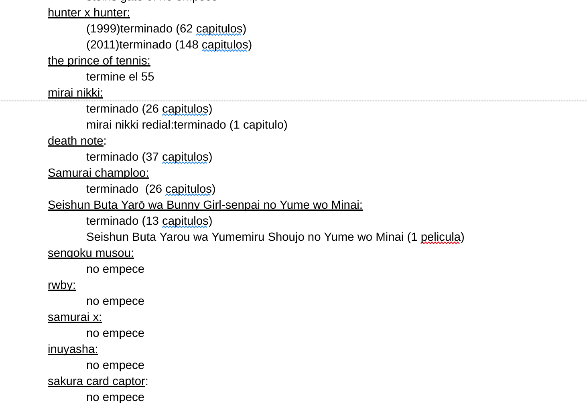

Trabajo práctico: Datos personales
Idea
Partiendo de una lista de animes que tengo en la cual anoto, tanto animes que me llamaron la atención, como animes que estoy viendo o ya vi, analizar ciertos datos de la misma.
Datos
Doc
El documento en cuestión es de la siguiente manera:
Este es un documento en el que desde 2013 llevó cuenta de todos los animes que vi o que me interesaron de alguna forma.
El mismo lo pasé a JSON para poder trabajarlo más fácilmente. Tambien agregué datos referidos al género del anime y duración de sus capítulos, información que extraje de My anime list (MAL)
JSON
El JSON quedó como una lista con entradas de esta forma:

y contiene 132 entradas.
Visualizaciones hechas
Utilizando el JSON previamente dicho y la libreria D3.js hice las siguientes visualizaciones:
- Generos ordenados por horas/series que vi y cuantas horas "me falta ver"
- Cuántas horas de anime vi VS. Cuantas horas totales hay en mi lista
- Cuántas horas de anime vi y cuantas me faltan comparadas con otras cosas que me hubiesen tomado el mismo tiempo( viajes a mar del plata, porcentaje de ingenieria informatica que hubiese completado, etc.)